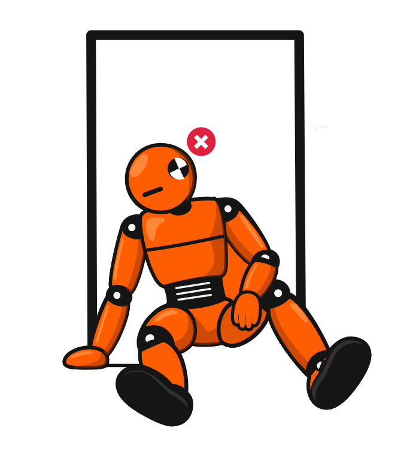
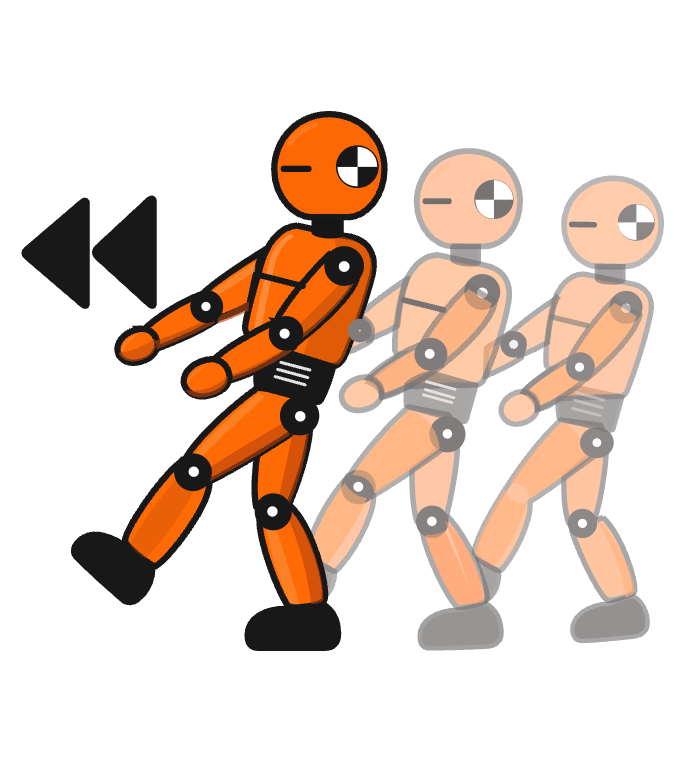

Deploy Doubles · spec v0.1 draft
Deployed is not the same as working.
An open standard and a set of reference apps for answering one question: did this deploy actually work?
A platform can report a deploy as successful while the app behind it is broken: the new release never took over, the queue worker is still running last week's code, the cache silently fell back to the filesystem, the scheduler never started. Deploy Doubles makes those failures visible, from the inside and from the outside, as one exit code.
Three steps
- Pick a double that matches what you want to test, and read its
double.jsonto see what it needs.npx deploydoubles list --needs postgres,worker
- Deploy it on any platform, the way you would deploy your own app.
- Verify it. Exit
0means every check passed on the release you deployed. Anything else comes with a hint for each failing check.npx deploydoubles verify https://your-deploy.example --commit <deployed sha> --json
Meet Dub and Vera
Dub is the double: it stands in for your app and takes the falls. Vera is the verifier: watching from the outside, stopwatch and clipboard in hand.


The standard
- The report an app serves about itself at
/.well-known/deploy-report— report.md, schema report-v0.1.json - The manifest (
double.json) of what an app needs — manifest.md, schema manifest-v0.1.json - Outside checks a verifier runs, and its exit codes — outside-checks.md
- Security: the two tiers, the token, and what a report never contains — security.md
Any app can implement the report. In PHP use deploydoubles/checks-php; in Node use @deploydoubles/checks. The verifier is deploydoubles on npm.
The doubles
Small reference apps, one per framework and service combination, that implement the standard exactly and exist to be deployed. Each one is a plain repository any platform can deploy from. The full list is machine-readable at catalog.json.
| Double | What it is |
|---|---|
| catalog.json | |
How this is built
Deploy Doubles is authored by Jan Peter Wiersma. Most of the code and text is drafted by AI agents under his direction and review: agent-written commits carry a Co-Authored-By trailer, and he is accountable for every line that is merged. A standard built for agents, built mostly by agents, with a human accountable for it. Agents can start at llms.txt.